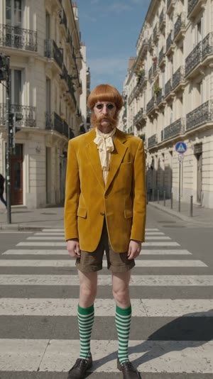

Last frame → first frame
Each clip starts from the exact last frame of the one before, so the street, camera angle, light and character do not change.

Clip 10 – 8 s
flowctl lastframe
flowctl fromframe
upload · attach · generateflowctl lastframe
flowctl fromframe
upload · attach · generate